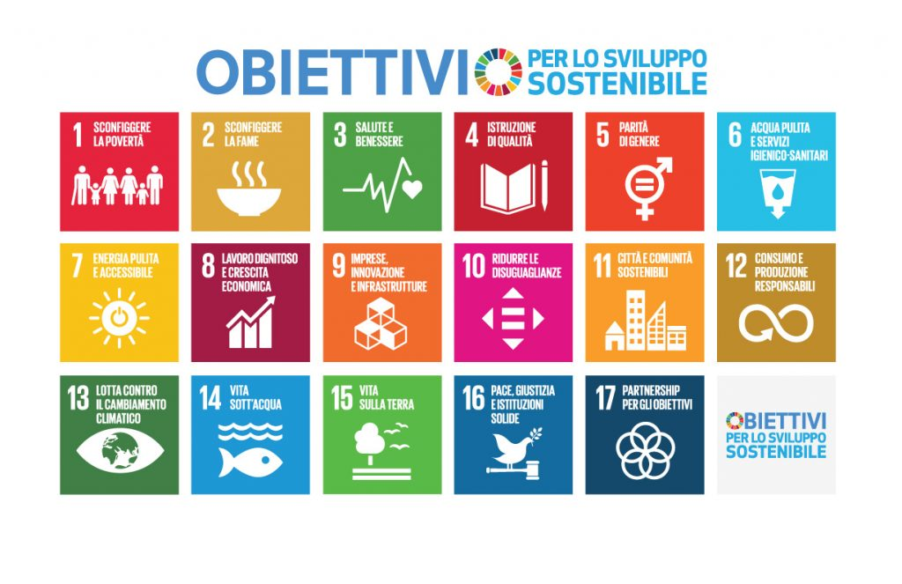

Nell'ambito dell'Agenda 2030 per lo Sviluppo Sostenibile, la tutela delle produzioni locali e delle eccellenze agroalimentari riveste un ruolo cruciale nel perseguire obiettivi di sviluppo economico, ambientale e sociale. In un contesto globale sempre più orientato verso la sostenibilità, è essenziale comprendere il valore intrinseco delle produzioni locali e il loro impatto positivo sulle comunità e sull'ambiente.
Sostenere le produzioni locali può contribuire a ridurre la povertà nelle comunità rurali, offrendo opportunità di lavoro e fonti di reddito stabili per agricoltori e produttori locali. Promuovere l'accesso equo ai mercati per i piccoli produttori è un passo verso la riduzione delle disuguaglianze economiche e sociali.
Le produzioni locali favoriscono la sicurezza alimentare, garantendo un accesso costante a cibo fresco e nutriente nelle comunità. Inoltre, promuovendo pratiche agricole sostenibili e riducendo la dipendenza da sistemi alimentari globalizzati, si può contribuire a mitigare l'impatto ambientale dell'agricoltura e a preservare le risorse naturali per le generazioni future.
Investire nelle produzioni locali può stimolare la crescita economica attraverso lo sviluppo del settore agricolo e agroalimentare locale, creando posti di lavoro stabili e sostenibili nelle aree rurali. Inoltre, promuovere il turismo enogastronomico legato alle produzioni locali può generare opportunità di impiego nel settore dei servizi e promuovere la valorizzazione del territorio e delle sue risorse culturali.
La promozione delle produzioni locali favorisce modelli di produzione e consumo più sostenibili, riducendo la dipendenza da importazioni alimentari a lungo raggio e favorendo la diversificazione delle filiere agroalimentari locali. Inoltre, incoraggiando pratiche agricole rispettose dell'ambiente e promuovendo il consumo di alimenti di stagione e a chilometro zero, si può contribuire a ridurre l'impatto ecologico dell'agricoltura e a promuovere un sistema alimentare più equo e resiliente
In conclusione, promuovere la tutela delle produzioni locali e delle eccellenze agroalimentari non solo contribuisce al benessere delle comunità e alla conservazione dell'ambiente, ma rappresenta anche un passo concreto verso il raggiungimento degli obiettivi dell'Agenda 2030. Investire nelle produzioni locali significa investire in un futuro più equo, sostenibile e inclusivo per tutti.